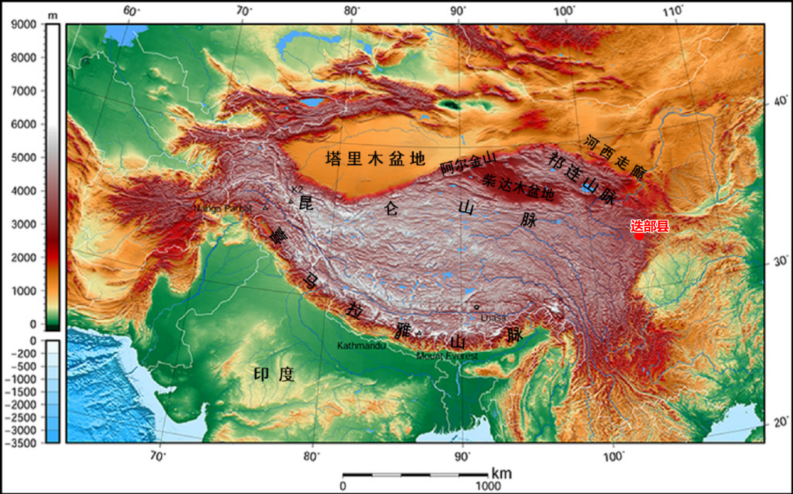
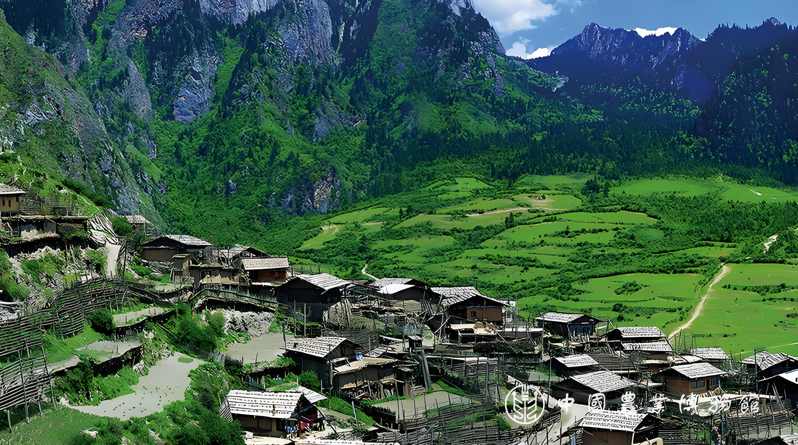

全球尺度看迭部：青藏高原东缘的生态孤岛
从行星尺度审视，理解一个西部小县为何与全球生态系统紧密相连。
一、全球坐标中的位置
迭部在全球地理坐标中的位置，决定了它独特的自然禀赋。从行星尺度审视，迭部地处青藏高原东部边缘，是这一“世界屋脊”向秦巴山地过渡的关键节点。青藏高原的隆升始于约2.4亿年前印度板块向北挤压，至今其边缘仍在持续抬升。迭部正位于这一仍在“生长”的高原东缘，承受着高原抬升与流水侵蚀的双重地质作用，形成了今日重峦迭嶂、山高谷深的地貌格局。
迭部位于北纬 33°39′—34°20′、东经 102°55′—104°05′ 之间，总面积 5108.3 平方公里，海拔跨度从约 1500 米至 4920 米。白龙江自西向东横贯全境，将群山分割为北侧迭山与南侧岷山。

二、全球气候变化下的迭部关联
迭部虽小，却与全球气候系统紧密相连。青藏高原是全球气候变化的敏感区，1961—2025 年间每十年升温 0.35℃，高于同期全球平均水平。这一升温趋势对迭部所在的高山峡谷区产生直接影响：冰川退缩、冻土退化正在改变区域水文格局与山坡稳定性。
过去 60 年，青藏高原冰川面积整体缩减约 24%，约 7000 条小冰川完全消失。尽管迭部境内以森林生态系统为主而非冰川主导，但作为白龙江上游重要水源涵养区，高原冰冻圈的持续变化将通过水系传导，影响迭部的水资源供给与生态安全。
三、全球视野下的生态价值
迭部的生态意义远超其县域尺度。全县植被覆盖率达 89.63%，森林覆盖率达 64.87%，拥有 1671 种高等级植物和 183 种野生珍稀动物，包括大熊猫、羚羊、雪豹等。更值得关注的是，迭部扎尕那的农林牧复合系统被 联合国粮农组织（FAO） 认定为“全球重要农业文化遗产”。这意味着迭部不仅是一个中国县域，更是全球农业文化多样性保护网络中的正式成员。
从全球尺度看，迭部是青藏高原东缘生物多样性走廊的关键节点，其森林生态系统的完整性对整个长江上游生态屏障具有不可替代的价值。


联合国粮农组织（FAO）官网收录介绍
中国 · 迭部扎尕那农林牧复合系统
该系统毗邻三大地貌和气候带。这一藏汉文化过渡区是基于对生态系统的深入了解对不同海拔高度农业地貌开展综合管理的典范。
看更多 >>央视网《田野对望》节目报道
[田野对望] 甘肃迭部扎尕那的农林牧复合系统
央视网 2024 年 11 月 22 日播出，以迭部扎尕那农林牧复合系统为案例，探讨中外农业文化遗产的异同与交流互鉴，可作为课堂教学的视频素材。
观看视频 >>一个约 5 万人口的西部小县，为何能获得联合国的关注？答案在于：迭部的价值不取决于人口规模或经济总量，而取决于它在全球生态系统中承担的功能。这正是“全球尺度”视角的意义——让学生看到家乡与世界体系的真实连接。
四、与初中地理教材的链接
迭部的全球尺度内容，可以与人教版初中地理教材的多个章节建立直接链接。最核心的契合点集中在七年级上册“陆地和海洋”与八年级上册“中国的自然环境”，同时也能呼应“发展与合作”中关于国际合作与全球议题的内容。
与七年级上册的链接
第三章“陆地和海洋”第二节“世界的地形”与第三节“海陆的变迁”：迭部地处青藏高原东部边缘，而青藏高原本身就是板块运动的产物。教材在“海陆的变迁”中会讲到板块构造学说，青藏高原正是印度板块与欧亚板块碰撞挤压抬升形成的典型例证。迭部所在的高山峡谷地貌，是这一宏观地质过程在区域尺度上的具体表现。教学链接：先让学生理解青藏高原的成因（全球/板块尺度），再出示迭部“重峦迭嶂、山高谷深”的地貌描述，引导学生思考“家乡的山为什么这么高、谷为什么这么深”，把抽象板块理论落到脚下的土地。
第四章“天气与气候”：青藏高原对东亚季风系统有深刻影响，它通过热力作用改变大气环流，进而影响中国东部降水格局。迭部属“非典型性大陆性气候，冬无严寒，夏无酷暑”，这种区域气候特征与高原的热力效应存在关联。虽然教材对季风成因的讲解较浅，但可以作为“气候受地形影响”的拓展案例。
与八年级上册的链接
第二章“中国的自然环境”第一节“地形和地势”：教材明确讲述中国地势“西高东低，呈三级阶梯状分布”，第一级阶梯就是青藏高原，平均海拔 4000 米以上。迭部海拔在 1600—4920 米之间，正处于第一级阶梯向第二级阶梯过渡的边缘地带。教学时可以让学生在中国地形图上找到迭部的位置，判断它位于哪一级阶梯或过渡带，理解“青藏高原东缘”这个地理坐标在教材知识体系中的确切含义。同时，教材提到“山区面积广大”是中国地形的显著特征，迭部全境为高山峡谷，正是山区县域的典型样本。
第二章“中国的自然环境”第二节“气候”和相关章节：迭部地处长江与黄河水域分界线附近，这一位置信息可以链接到教材中关于中国主要水系和分水岭的内容。白龙江作为嘉陵江支流，属于长江流域，而迭部北部山区则是黄河支流的发源地，这种“一县跨两流域”的特点在县域尺度上直观展示了中国水系格局的微观切片。
第八章“西北地区”和相关区域地理内容（视教材版本）：迭部隶属甘南藏族自治州，有藏、汉、回等 17 个民族，可以与教材中关于民族分布“大杂居、小聚居”的特点相链接。扎尕那农林牧复合系统被联合国粮农组织认定为“全球重要农业文化遗产”，这可以链接到“发展与合作”中关于国际组织（FAO）和全球文化多样性保护的内容，让学生看到一个县域如何通过国际合作获得全球认可。